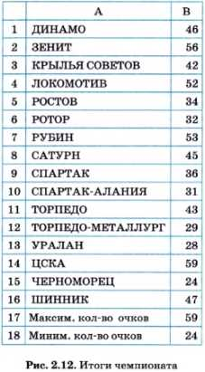
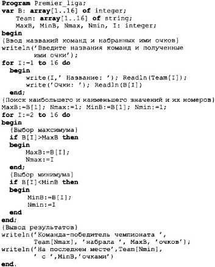
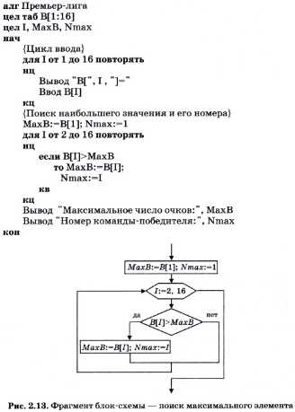
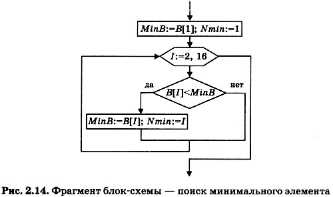

Основные темы параграфа
Поиск максимума и минимума в электронной таблице
Программа на Паскале поиска максимума и минимума в массиве
блок-схемы алгоритма поиска в массиве максимума и минимума
Поиск максимума и минимума в электронной таблице
Одной из типовых задач обработки массивов является поиск наибольшего или наименьшего значения среди значений его элементов. Построим алгоритм решения этой задачи и составим программу на Паскале. Для примера возьмем итоговые данные чемпионата России по футболу в премьер-лиге за 2003 год.
На рисунке 2.12 показана электронная таблица с итогами чемпионата. В столбце А расположены названия команд, в столбце В — количество очков, набранных каждой командой. Команды перечислены в алфавитном порядке. Победителем является команда, набравшая наибольшее количество очков. Команда, набравшая очков меньше всех других, в следующем сезоне покидает премьер-лигу.
Для определения максимального значения в электронной таблице существует функция МАКС(), а для нахождения минимального значения — функция МИН( ). В ячейке B17 записана формула МАКС(В1:В16), а в ячейке В18 — формула МИН(В1:В16). Результаты вы видите в таблице. Отсюда делаем вывод: чемпионом России стала команда ЦСКА, а на последнем месте — «Черноморец».

Программа на Паскале поиска максимума и минимума в массиве
Составим программу на Паскале, но в эту программу мы внесем еще некоторые новые детали. Хотелось бы в итоге работы программы получить не номера, а названия команды-победителя и команды, занявшей последнее место. Но для этого названия всех команд чемпионата должны быть организованы в массив и введены как исходные данные. В программе такой массив назван Team [1..16] и тип его элементов объявлен как string.

Обратите внимание на то, как определяется название команды- победителя и команды, занявшей последнее место. Это делается по значениям индексов максимального и минимального элементов массива В:Nmax и Nmin. В переменной Team [Nmax] находится название чемпиона, а в переменной Team [Nmin] — название последней команды в чемпионате.
При выполнении программы на экране будет отражено следующее:
Введите названия команд и полученные ими очки
1 Название: ДИНАМО
Очки: 46
2 Название: ЗЕНИТ
Очки: 56
3 Название: КРЫЛЬЯ СОВЕТОВ
Очки: 42
16 Название : ШИННИК
Очки: 47
Команда-победитель чемпионата ЦСКА набрала 59 очков
На последнем месте ЧЕРНОМОРЕЦ с 24 очками
блок-схемы алгоритма поиска в массиве максимума и минимума
Разберемся, как же программируется определение максимального и минимального значений в числовом массиве. Начнем с поиска максимума. Опишем алгоритм на Алгоритмическом языке.
Пусть в целочисленный массив B[1:16] заносятся очки команд в том порядке, в каком они расположены в таблице на рис. 2.12. Максимальное количество очков получим в переменной МахВ. Кроме того, найдем еще и номер команды, занявшей первое место. Для этого будем использовать переменную Nmax.
Рассмотрим алгоритм решения задачи. Алгоритм будет составлен исходя из упрощающего предположения о том, что максимальное количество баллов набрала только одна команда. Именно ее номер и будет выведен в качестве результата. Более общий вариант предлагается для рассмотрения в задании к данному параграфу. Ниже приведен полный алгоритм на Алгоритмическом языке, а на рис. 2.13 — фрагмент блок-схемы, относящийся только к выбору максимального элемента (без ввода и вывода).

Идея алгоритма состоит в следующем. В переменную МахВ заносится значение первого элемента массива, в переменную Nmax — единица, т. е. номер первого элемента. Затем в цикле последовательно с МахВ сравниваются все остальные элементы массива В. Если очередной элемент оказывается больше текущего значения МахВ, то его значение заносится в МахВ, а его номер — в Nmax. Когда закончится цикл, в МахВ останется наибольшее число из всего массива, а в Nmax — его номер.
Теперь нетрудно догадаться, как искать минимальное значение в массиве и его номер. Если для этого использовать в программе переменные MinB и Nmin и в условии ветвления заменить знак отношения «больше» на «меньше», то получим нужный алгоритм. Его фрагмент показан блок-схемой на рис. 2.14.

Если в алгоритме нужно одновременно искать максимальное и минимальное значения, то соответствующие ветвления можно объединить в одном цикле. Именно так сделано в приведенной ниже программе на Паскале.
Алгоритм выбора максимального(минимального) значение в массиве имеет структуру цикла с вложенным неполным ветвлением
Для обработки последователей символов в Паскале имеется строковый тип данных:string
Вопросы и задания
1.Придумайте собственные примеры данных, которые можно было бы представить в виде строкового массива. Подготовьте сообщение.
2.Представьте себе, что две команды набрали по 59 очков. Например, ЦСКА и ЗЕНИТ. Номер какойкоманды был выведен в качестве результата?
3. Введите в компьютер программу Premier_liga. Выполните ее, получите результаты. Сравните числа с результатами, приведенными в параграфе.